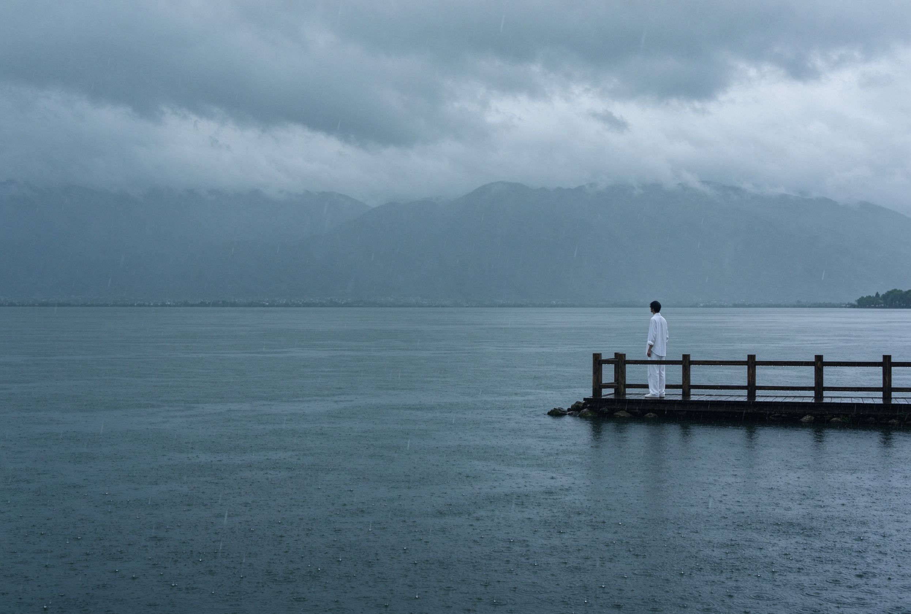

很多人来大理会避开六月到九月，以为这整季都在下雨。其实不是这样。大理的雨季更像是一阵一阵的情绪——早晨可能还出着太阳，午后一阵雨下来，半小时后云又散开，苍山的雪线从云里露出来。
雨季的古城是湿的。青石板被洗得发亮，墙头的三角梅颜色深得像油画。你撑着一把伞走在人民路，雨打在伞上的声音很密，街边的小馆子里都在煮饵丝。

山上的云在这个季节低得不可思议。有时候你站在玉带路，云就从你肩膀旁边飘过去。远处的洱海半藏在云里，像一幅没画完的水墨。
带什么：一件防风的薄外套，一双不怕水的鞋，一把伞。不用带太多——大理的雨从不缠人，它来的时候很真，走的时候很干脆。
什么时候走：如果你想拍最有空气感的照片，如果你喜欢在雨后的院子里喝茶，如果你不介意偶尔取消一段行程——那现在就是大理最好的时候。